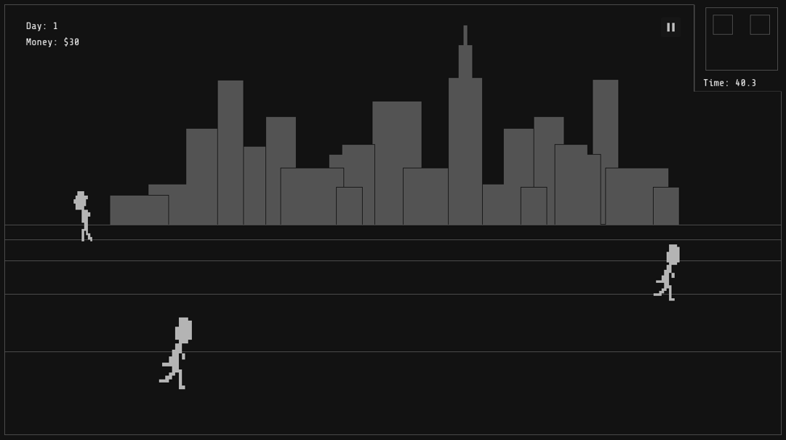
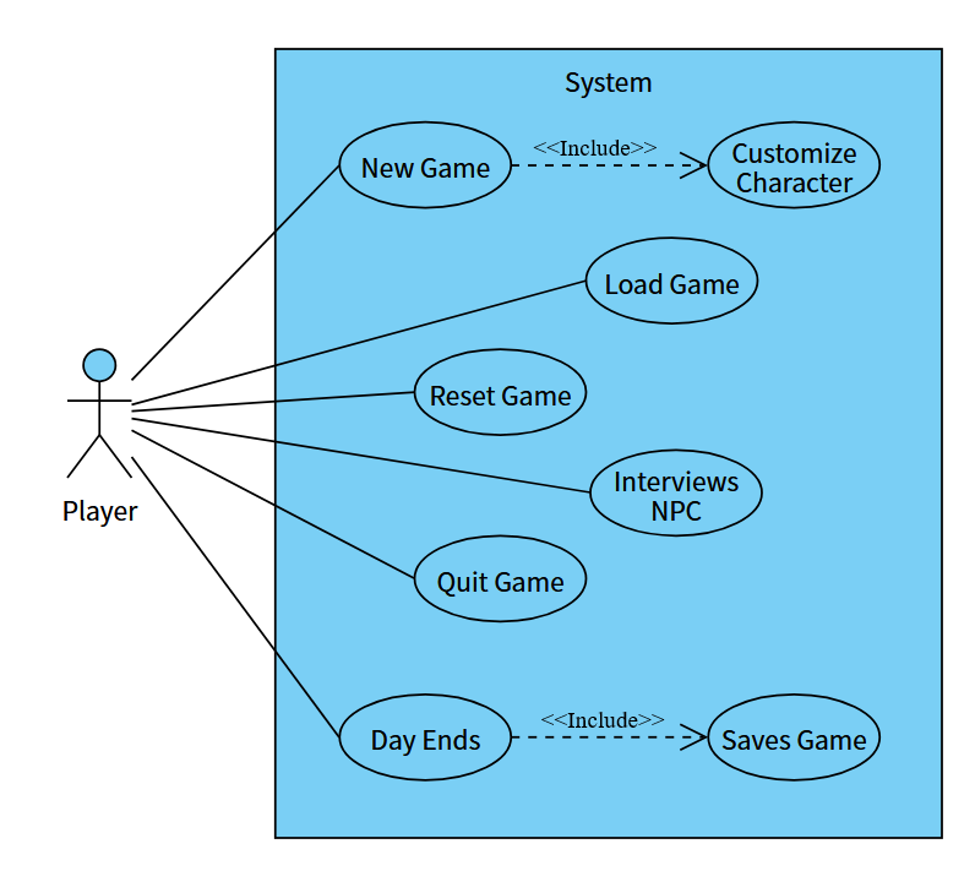
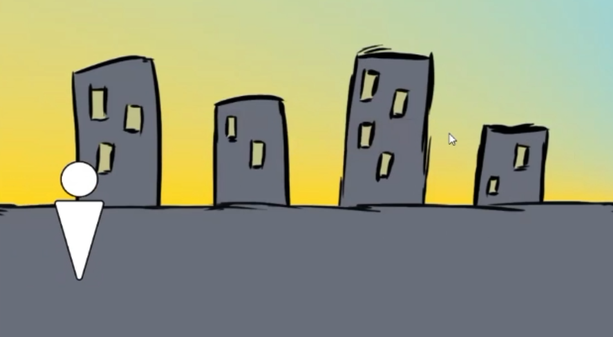
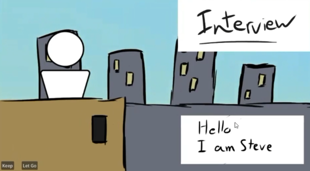
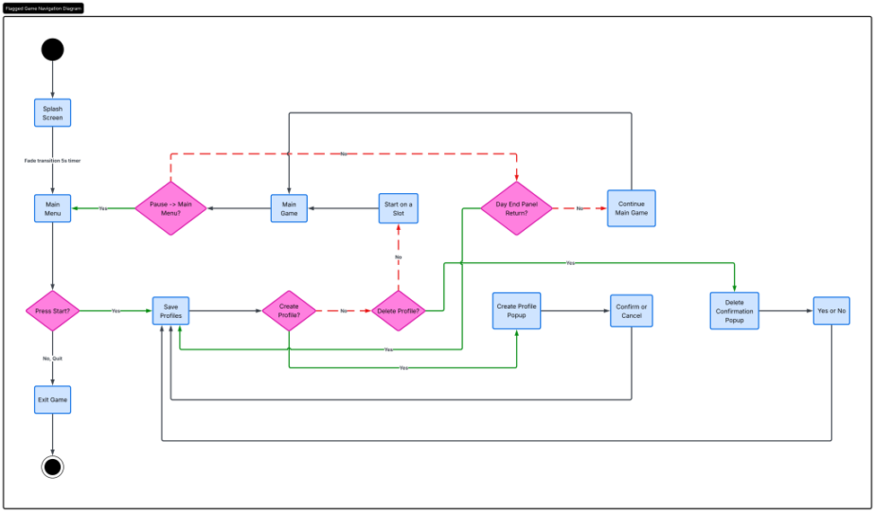
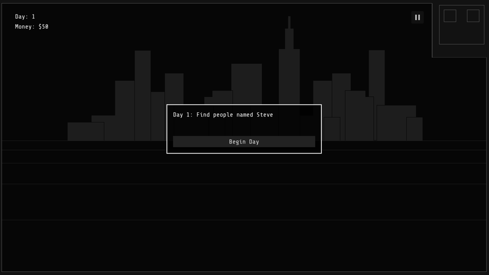
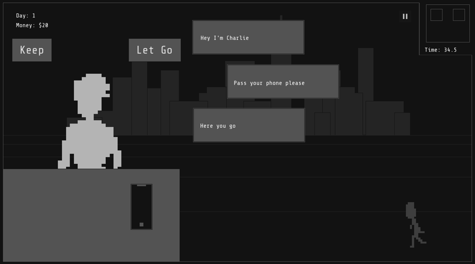

Case Study
Flagged
A 2D decision game built in Godot, where the player works as a screener interviewing people who walk across the screen and deciding whether to Keep or Let Go under a rules that change very day.

Project Overview
Flagged is a 2D game where you play a screener. Every in-game day, people walk across the screen and you have to interview them and decide Keep or Let Go, based on a rule that changes each day. Get it right and you earn money, get it wrong and it costs you, and on top of that rent gets deducted when the day ends. Drop below zero and your save gets locked as a game over. Muhammad Furqan Ahmed and I built this across three iteration phases (Analysis, Design, Construction) for our INFO3190 project in March 2026.
User Research & Discovery
Before starting I wanted to know if this kind of game still had an audience. Papers, Please is over a decade old at this point but games are still coming out in the same genre, like No, I'm Not a Human, so clearly people are still into it.
I played through both of those to see how they handled the interview/decision loop. They're both built around the same idea, inspect someone or something, then accept or reject it, and both run you through a queue with limited time per decision. What stood out to me was that in neither game do you get to pick who you inspect — that felt like the gap Flagged could fill.
Once we had the concept down we moved into the Analysis iteration. We identified the Player as the actor, the NPCs and Game System as stakeholders, and wrote out eight use cases with triggers, preconditions, flows and exceptions: New Game, Customize Character, Load Game, Delete Save, Interview NPC, Day Ends, Saves Game and Quit Game. Working through the exception cases is honestly what showed us where we needed to guard the player — things like an empty username field, an accidental delete, a corrupt save, or trying to make a decision after the day already ended.

Problem Statement
In most inspection-based decision games, you're working through a fixed queue of people or items and making calls under time pressure, but you don't actually get a say in who you inspect. I thought there was room to make it more strategic by handing that choice to the player, while keeping the hard accept-or-reject decisions and the changing rules and time pressure that make the genre work.
How might we let players choose who to inspect, while keeping every decision tense, timed and consequential?
Ideation
From the problem statement and the use cases, a few interface decisions fell out pretty naturally:
- People walk across the screen instead of sitting in a queue, and you click whoever you want to interview. If someone walks off the screen without being inspected they count as missed, but you only get penalized if they should've been kept — so skipping people is a real part of the strategy, not just a fallback.
- The day's rule shows up in a Day Begin message before anything starts, and the timer only kicks in once you hit Begin Day. No surprise rules mid-run.
- You only ever interview one person at a time. Clicking someone freezes and hides them, pulls up the overlay, and locks out clicking on anyone else until you're done.
- Info about each person comes through a phone in the interview overlay, with the apps available on it changing day to day.



Prototyping
Analysis gave us a barebones prototype to work off of. During Design we built that out into an actual full game loop, plus the design class diagram, design-level sequence diagrams, navigation diagram, UI prototype, output design and an entity relationship diagram. Construction is where we went back and polished the UI/UX.
For the look, I went with a minimalistic, monochrome palette — dark and light greys, black and white — so the focus stays on the people, the text and the numbers instead of on decoration.
Usability Testing
During Construction we ran the game logic through GUT (Godot Unit Test) — 38 tests total covering day data, every rule type, day loading, saving and profile serialization. All 38 passed, no defects.
Once the loop was playable we grabbed 4 classmates and had them play through the first two days with basically no instructions, just "press Start," then asked them a few questions after.
Most people got Keep and Let Go right away, but a couple weren't sure if they'd made the right call, so we ended up adding sound effects to confirm decisions. The other thing we noticed was pacing — the first days felt slow. We didn't want to speed them up too much since people still needed time to learn the loop, but once they had it down they were just standing around waiting.
To fix that we bumped up how many people show up in the first few days and lowered the penalty for wrong decisions early on, so newer players wouldn't tank their save before they'd even figured things out. Ran it again with 3 more testers afterward and nobody was confused or just waiting around anymore.
Final Solution
What we ended up with is a 6-day game that ramps up in difficulty as you go. You create or load a profile, read the day's rule, hit Begin Day, and people start walking across the screen. Click someone and the interview overlay pops up with the phone. Choose Keep or Let Go and the HUD updates right away. When the timer hits zero, rent gets applied, the day advances, and you either see your result or a game over screen. Hit Return and it saves your profile.


Design Brief
Flagged is meant to be a short, replayable session with rising tension and real consequences, where who you choose to interview is the strategy. Aimed at casual PC players who'd enjoy something like Papers, Please or No, I'm Not a Human.
For layout, people walk across the main screen while the HUD keeps day, money and time visible at all times, and interviews open in an overlay so you're only ever dealing with one person. Colour-wise it's monochrome — greys, black and white — for that minimalist urban feel that keeps the focus on people, text and numbers instead of decoration. Typography is Share Tech Mono, which fits the tone and stays readable even small.
Accessibility Considerations
- Errors show up as both a visible message and a sound cue, and other key moments (interview opening, button clicks, game over) each get their own audio cue too.
- The day's rule is always shown as on-screen text before the timer even starts.
- Deleting a profile needs confirmation first, and there's a pause menu so you can stop the game whenever.
- High-contrast greyscale means nothing depends on colour alone to make sense.
Lessons Learned
Looking at what Papers, Please and No, I'm Not a Human didn't do was honestly the most useful part of research — that gap became the whole design. Keeping the day settings in JSON instead of hardcoding them made it way easier to tweak difficulty without touching code every time. And probably the biggest one: the rules and the interface need to be designed together, because a rule only feels fair if the player can actually read it and watch it get enforced exactly as written.